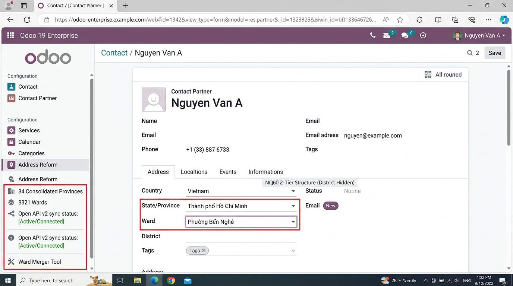

Understanding the legal transformation from legacy 3-tier divisions to the modern 2-tier streamlined governance.
%(street)s\n%(ward)s, %(district)s\n%(state)s.active=False) & hidden from UI.%(street)s\n%(ward_name)s\n%(state_name)s.Experience the simplified form experience with zero visual clutter:
map_with_ward_ids preserve legacy addresses for historical audit.

Migrating from legacy 3-tier to NQ60? dn_vn_address_nq60 includes automated migration tools:
dn_vn_address_nq60.api_url.map_with_ward_ids.Safely re-maps contacts and archived districts with complete rollback safety.
Status: NQ60 ReadyVersion 19.0.1.0.0 • Author: Dyan
Fully compatible with dn_connector_base and dn_vn_address_nq60_connector.